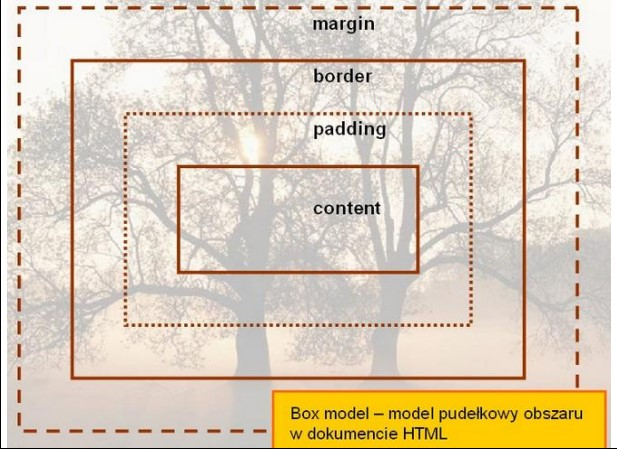
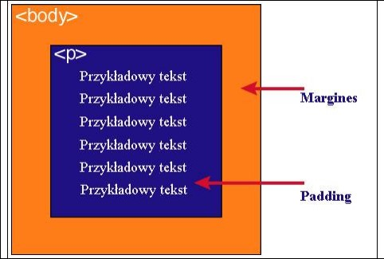

| zawartość | Opis |
| content | zawartość elementu (np.: tekst, obrazek) |
| padding | otaczające marginesy wewnętrzne, odstęp między obramowaniem i
zawartością elementu |
| border | obramowania wokół zawartości elementu, ma styl i kolor |
| margin | marginesy wokół ramki (margines zewnętrzny). Jest to pusty obszar wokół
ramki, który nie ma koloru tła i jest przeźroczysty |
Uwaga 1
Padding, border i margin mogą mieć zerową wartość.
Uwaga 2
Tło elementu jest określone dla wszystkich z podanych powyżej obszarów z wyjątkiem
marginesów zewnętrznych, które zawsze są przezroczyste (transparent).
Grafika obrazująca model pudełkowy

Różnica pomiędzy paddingiem i marginesem
